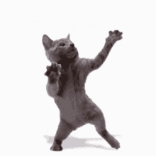

Adopting a cat !
Bio:
Introducing a charming and adorable 2-month-old cat who is ready to steal your heart! This little feline bundle of joy is bursting with personality and is looking for a loving forever home.
Meet our precious kitty, who exudes cuteness from head to tail. With a soft and fluffy coat, this tiny ball of fur is irresistibly cuddly. Their bright and curious eyes will melt away any stress, as they explore the world around them with an innocent sense of wonder.
a genertic division/block in the page
I am a link to another page
internal link

Responsibilities
- Feeding: Provide a balanced and appropriate diet for your kitten, following the feeding guidelines recommended by a veterinarian. Ensure freshwater is available at all times.
- Veterinary Care: Schedule regular check-ups with a veterinarian for vaccinations, deworming, and general health assessments. Attend any necessary medical treatments or emergencies promptly.
- Litter Box Maintenance: Set up a clean and easily accessible litter box, and scoop it daily to maintain hygiene. Gradually introduce and teach your kitten to use the litter box.
- Grooming: Regularly brush your kitten's coat to prevent matting and hairballs. Trim their nails as needed and maintain good oral hygiene by brushing their teeth.
- Play and Exercise: Engage in interactive play sessions with your kitten using toys and provide opportunities for physical exercise to keep them mentally stimulated and physically active.
